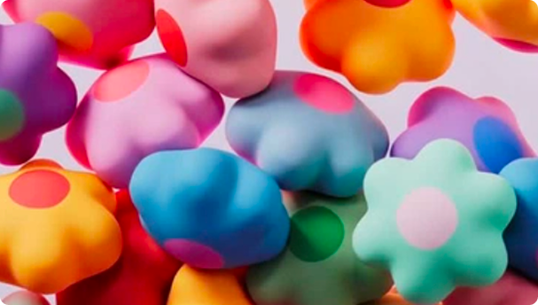
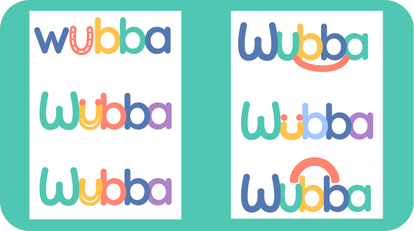
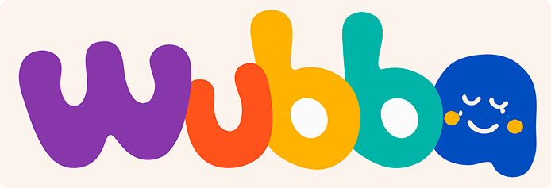
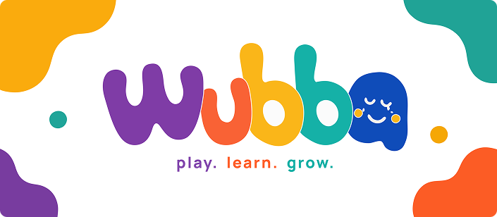

BRAND IDENTITY × TOY DESIGN
Wubba
The shape of play.
TL;DR
Wubba is a toy-brand identity designed for children aged 1–7 and their parents.
The challenge was to balance two very different audiences: a brand that feels playful and exciting to children, while giving parents signals of quality, safety, trust, and longevity.
I developed the visual identity across logo, typography, colour, illustration, packaging, and brand applications.
Background
Toys have two audiences.
Children see colour, shape, characters, and possibility.
Parents see safety, quality, value, and trust.
Wubba needed to speak to both without becoming either overly childish or overly corporate.
Problem
How do you make a toy brand playful without making it feel disposable?
The identity needed to feel fun enough for children while still looking considered enough for parents to trust.
And because the brand would exist across packaging, retail, digital, and products, the identity had to scale.
Process
Designing Wubba
-
The shape of play
The identity was built around soft, modular forms:
Blob · Bean · Circle · Arch · Drop
These shapes became the visual vocabulary of the brand.
-
Building the logo
The Wubba wordmark uses rounded forms to create a sense of softness and approachability while maintaining enough structure to work across different applications.
-
Creating the colour system
A playful palette of:
Purple · Orange · Yellow · Green · Blue · Cream · Charcoal
creates flexibility across products and packaging without requiring every application to look identical.
-
Designing beyond the logo
The identity extends into:
Packaging → Mascot → Icons → Retail → Digital → Product applications
The goal was to make Wubba recognizable even when the logo isn't the largest element on the page.

Final Product
Wubba identity
The Wubba wordmark is inspired by soft modular forms commonly found in children's toys. Rounded geometry, bold proportions, and vibrant colours create a friendly and approachable identity while maintaining the clarity and confidence expected by parents. The result is a timeless logo that balances playfulness with premium quality.
The logo is built on a consistent rounded geometry with uniform stroke weight and smooth corner radii. Each letter follows the same visual rules to create harmony and flexibility across every application.

Reflections
Play needs a system too.
The challenge wasn't simply making something colourful.
It was creating enough visual flexibility for the brand to grow while keeping the underlying identity recognizable.
